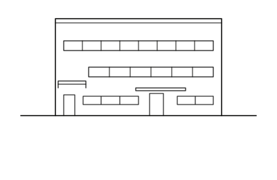
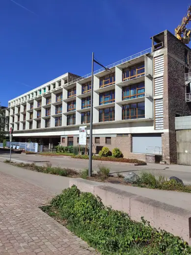

Le Corbusier buildings 34
Sort
 Villa Fallet1907 · La Chaux-de-Fonds
Villa Fallet1907 · La Chaux-de-Fonds Villa Le Lac1924 · Corseaux
Villa Le Lac1924 · Corseaux
Villa Stein-de Monzie (Les Terrasses)1928 · Vaucresson (Garches) Immeuble Clarté1932 · Geneva
Immeuble Clarté1932 · Geneva Pavillon Suisse1933 · Paris
Pavillon Suisse1933 · Paris Centrosoyuz Building1936 · Moscow
Centrosoyuz Building1936 · Moscow Cabanon de Le Corbusier1952 · Roquebrune-Cap-Martin
Cabanon de Le Corbusier1952 · Roquebrune-Cap-Martin Unité d'Habitation1952 · Marseille
Unité d'Habitation1952 · Marseille Curutchet House1953 · La Plata
Curutchet House1953 · La Plata Mill Owners' Association Building1954 · Ahmedabad
Mill Owners' Association Building1954 · Ahmedabad Palace of Justice (Punjab and Haryana High Court)1955 · Chandigarh
Palace of Justice (Punjab and Haryana High Court)1955 · Chandigarh Sanskar Kendra1957 · Ahmedabad
Sanskar Kendra1957 · Ahmedabad National Museum of Western Art1959 · Tokyo
National Museum of Western Art1959 · Tokyo Sainte-Marie de La Tourette1960 · Éveux
Sainte-Marie de La Tourette1960 · Éveux Carpenter Center for the Visual Arts1963 · Cambridge
Carpenter Center for the Visual Arts1963 · Cambridge Government Museum and Art Gallery1968 · Chandigarh
Government Museum and Art Gallery1968 · Chandigarh Saint-Pierre, Firminy2006 · Firminy
Saint-Pierre, Firminy2006 · Firminy Maison Blanche1912 · La Chaux-de-Fonds
Maison Blanche1912 · La Chaux-de-Fonds Villa Schwob (Villa Turque)1917 · La Chaux-de-Fonds
Villa Schwob (Villa Turque)1917 · La Chaux-de-Fonds Maison Guiette1927 · Antwerp
Maison Guiette1927 · Antwerp Villa Savoye1931 · Poissy
Villa Savoye1931 · Poissy Cité de Refuge (Salvation Army Hostel)1933 · Paris
Cité de Refuge (Salvation Army Hostel)1933 · Paris Immeuble Molitor1934 · Paris
Immeuble Molitor1934 · Paris
Usine Claude et Duval1951 · Saint-Dié-des-Vosges United Nations Secretariat Building1952 · New York
United Nations Secretariat Building1952 · New York Secretariat Building1953 · Chandigarh
Secretariat Building1953 · Chandigarh Notre-Dame du Haut1955 · Ronchamp
Notre-Dame du Haut1955 · Ronchamp Maisons Jaoul1956 · Neuilly-sur-Seine
Maisons Jaoul1956 · Neuilly-sur-Seine Unite d'Habitation Berlin1958 · Berlin
Unite d'Habitation Berlin1958 · Berlin Capitol Complexc. 1962 · Chandigarh
Capitol Complexc. 1962 · Chandigarh Palace of Assembly1962 · Chandigarh
Palace of Assembly1962 · Chandigarh Pavillon Le Corbusier1967 · Zurich
Pavillon Le Corbusier1967 · Zurich Le Corbusier Gymnasium1980 · Baghdad
Le Corbusier Gymnasium1980 · Baghdad Open Hand Monument1985 · Chandigarh
Open Hand Monument1985 · Chandigarh